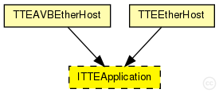
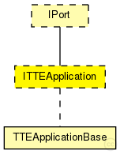

This documentation is released under the Creative Commons license
This documentation is released under the Creative Commons licenseInterface to be implemented by application models. Since this is an abstract module please do not instantiate it
See also: TTEAPIApplicationBase
Author: Till Steinbach
The following diagram shows usage relationships between types. Unresolved types are missing from the diagram. Click here to see the full picture.
The following diagram shows inheritance relationships for this type. Unresolved types are missing from the diagram. Click here to see the full picture.
| Name | Type | Description |
|---|---|---|
| IPort | module interface |
Interface of TTEthernet ports. A port is a virtual instance that can receive critical traffic through its gates. |
| Name | Type | Description |
|---|---|---|
| TTEEtherHost | compound module |
Module for a TTEthernet Host. Contains a EtherLLC for best-effort traffic, a TTEPHYPort module as physical port, sync module (Sync) and a TTEScheduler module. The Host is configured by the provided TTEthernet XML network configuration (network_configuration parameter) and uses the device_name parameter to find its config. The configuration is done by the BufferManager that deletes itself at runtime. |
| Name | Type | Default value | Description |
|---|---|---|---|
| buffers | string |
Comma seperated list of buffer modules the application is allowed to use |
// // Interface to be implemented by application models. // Since this is an abstract module please do not instantiate it // // // @see TTEAPIApplicationBase // // @author Till Steinbach moduleinterface ITTEApplication extends IPort { parameters: //Comma seperated list of buffer modules the application is allowed to use string buffers; gates: //Input gate for the incoming SchedulerActionTimeEvent messages input schedulerIn; //Input gate for the incoming SynchronizationNotification messages input syncIn; }
This documentation is released under the Creative Commons license